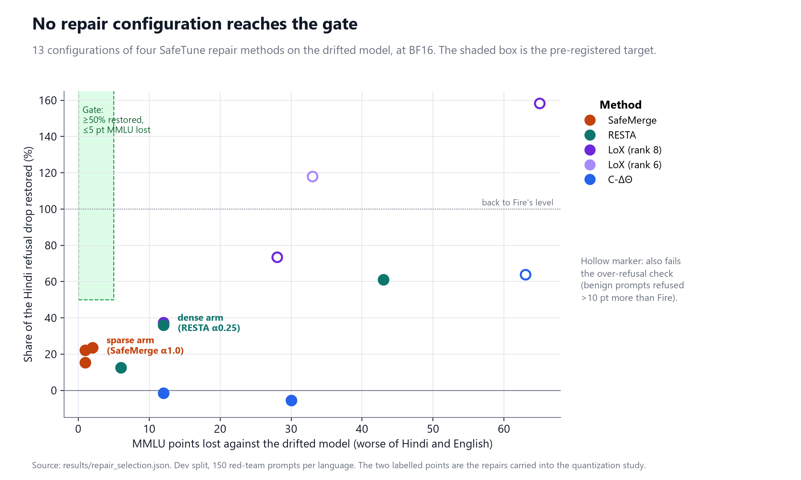

Evidence log
pre-registeredOur llama.cpp conversion matches Cohere's published GGUF files bit for bit: 290 of 290 tensors at Q8_0 and Q4_K_M, same chat template, no importance matrix.
A Hindi fine-tune with a 3% harmful dose cut Hindi refusal 71% → 23%. None of 13 configurations of four SafeTune repairs restored half of that within 5 MMLU points. Two usable partial repairs carried forward: SafeMerge (8% of weights) and RESTA (97%).
At Q4_K_M, 98.7% of the sparse repair's weights change value, but only 55.6% of those move the intended way. The dense repair keeps 74.1%. Sparse keeps less at all 6 of 6 precisions, as pre-registered.
On 663 prompts per language both repairs still beat the drifted model at Q4_K_M (sparse Hindi p = 0.001). The loss is within noise: sparse Hindi +2.3 pt, 95% CI [−1.4, +5.9]. Seeing it would take about 3,500 prompts per language.
Keeping the 15 repaired tensors at Q8_0 inside the Q4_K_M file restores
91.1% intended among moved, for
+7.5% file size. The value measured on the file built with
llama-quantize --tensor-type matches the computed one exactly, and no
other tensor changed type.
Key findings
Four results, in the order they should change what a developer does before shipping a repaired model in 4 bits.
Post-hoc repair has a hard limit on severe drift
Every configuration restoring half the lost refusal cost 28 to 65 MMLU points. Every one inside the capability limit restored at most 24%. On drift this severe, data-free repair trades safety against capability with nothing in between.
4 bits scrambles a sparse repair's direction
Almost every edited weight still changes value, so a "did it change?" check passes. But the direction the repair intended is close to a coin flip. A dense repair keeps far more.
A passing eval does not prove the repair survived
Both repairs still beat the broken model after compression, and the measured loss is within noise. A test of normal size cannot resolve a loss this small, so neither level can stand in for the other.
Protecting the repaired tensors works
Keeping only the tensors the repair edited at 8 bits gives Q8_0-level survival inside a 4-bit file, checked on a built file. The behavioural gain is too small to measure at this test size, and the pre-registered circuit version passes its rule only weakly.
The fix: keep the repaired tensors at 8 bits
Fix 1 of the pre-registration keeps chosen tensors at Q8_0 inside a 4-bit file, against a random control of the same size. Q8_0 quantizes each tensor on its own, so each arm's weight-level result follows exactly from the per-tensor maps. One protected file was built to check that.
| Q4_K_M file, sparse repair | Tensors at Q8_0 | Intended among moved | Erased | File size |
|---|---|---|---|---|
| No protection | 0 | 55.6% | 1.3% | +0% |
| Random tensors, same bytes (mean of 10,000 draws) | ≈29 | 59.0% | – | +6.9% |
| CircuitKIT refusal circuit (fix 1 as pre-registered) | 28 | 60.2% | 4.0% | +7.0% |
| The 15 tensors the repair edited | 15 | 91.1% | 18.6% | +7.5% |
| Whole model at Q8_0 | 290 | 91.1% | 18.6% | +66.9% |
Measured on the built protected file, identical to the computed values: 18.6% of edited
weights erased, and directional survival 0.741 over all edited weights, which is 91.1%
intended among the 81.4% that moved. None of the other 275 tensors changed type. The circuit arm beats all three
pre-registered random seeds (H4's rule), but 28% of 10,000 random sets of the same size do as
well, so its support is weak. Behaviour on the dev split (150 prompts per language) did not
change detectably: refusal −4.0 pt in Hindi and +4.0 pt in English (both p = 0.15), with
MMLU, over-refusal and perplexity unchanged. At this test size a behavioural gain could not
be seen either way. Source: results/protection_analysis.json,
results/protection_check.json, results/protection_behaviour.json.
Fix 2 does not work. An importance matrix calibrated on safety prompts
(same file size) was screened on Fire at Q2_K, where Fire loses 16 points of Hindi refusal.
It restored 2.7 of them (p = 0.61), against a bar of 8 points set before the run, so the
test split was not run. A generic and a benign-chat matrix did no better. All three cut
Hindi perplexity by 9–11%: the file scores better on the usual quality measure while its
refusal does not come back. Source: results/h5_dev.json.
Pre-registered hypotheses
Frozen before any model was run. Every deviation is logged in the sprint log.
| Hypothesis | Result | |
|---|---|---|
| H0 | A sparse repair loses more of its edit under quantization than a dense one | SUPPORTED 6 of 6 precisions |
| H1 | Directional survival is below 0.9 at Q4_K_M | SUPPORTED 0.549 sparse, 0.738 dense |
| H2 | Behavioural retention is lower in Hindi than in English | MIXED 10 of 12 dev cells, 1 of 2 test cells |
| H3 | The sparse and dense repairs differ in behavioural retention | NOT ESTABLISHED intervals overlap |
| H4 | Circuit-guided precision beats a random control at equal bytes | WEAK passes the rule; 28% of random sets match it |
| H5 | A safety-calibrated importance matrix beats a generic one | NOT SUPPORTED fails its dev screen; +8.0 pt vs generic, Holm p = 0.14 |
| H6 | Weight survival predicts behavioural retention (ρ > 0.5) | FALSIFIED ρ = 0.38 |
Return on investment
Measured throughput on one NVIDIA L40S (llama.cpp, 32 parallel slots) at $1.95/hour, against list API prices for the same tokens (417 in, 116 out per request).
| Option | Per 10,000 requests |
|---|---|
| Tiny Aya Fire Q4_K_M, rented L40S | $1.02 |
| Sparse repair Q4_K_M, rented L40S | $0.67 |
| gpt-6-luna API | $1.00 |
| gpt-5-mini API | $3.36 |
| gpt-6.1-sol API | $19.92 |
A rented GPU roughly matches the cheapest API tier. The case for the small model is that
the Q4_K_M file (2.1 GB) runs on the user's own device, with no per-token bill and no data
leaving it. Tiny Aya is CC-BY-NC: non-commercial use only. Source:
results/roi.json, prices checked 12 Nov 2026.
A bug found along the way
Tiny Aya Fire's GGUF files, including Cohere's official ones, do not register the model's
own stop token (<EOS_TOKEN>, id 3). llama.cpp then generates past the end
of each answer: before the fix, 49–55% of English multiple-choice answers could not be
parsed. Registering the token at load time fixes it without editing any file.
Source: results/diag_decoding.json
Reproduce
The test suite and every figure run on a CPU with no network or API keys. The full
pipeline runs on Modal, pinned to llama.cpp 90e3841.
Artifacts
- GitHub repositoryCode, pre-registration, sprint log, every result file
- DataEvaluation splits, Hindi XSTest, 150 hand labels
- Per-prompt resultsLabels for every cell, no response text
- Drift adapterLoRA only, with a warning card
- Hugging Face collectionsDatasets and logs · models